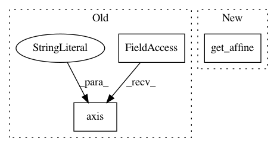

d190e8dc4f51f73e9d6b6e2fdf08f9cbfa352c5b,plot_haxby_searchlight.py,,,#,17
Before Change
plt.imshow(np.rot90(p_ma[..., picked_slice]), interpolation="nearest",
cmap=plt.cm.hot)
plt.title("F-scores")
plt.axis("off")
plt.show()
After Change
mean_fmri = image.mean_img(fmri_img)
plot_stat_map(nibabel.Nifti1Image(searchlight.scores_,
mean_fmri.get_affine()), mean_fmri,
title="Searchlight", slicer="z", cut_coords=[-16])
////// F_score results
In pattern: SUPERPATTERN
Frequency: 3
Non-data size: 3
Instances
Project Name: nilearn/nilearn
Commit Name: d190e8dc4f51f73e9d6b6e2fdf08f9cbfa352c5b
Time: 2014-06-17
Author: chris.gorgolewski@gmail.com
File Name: plot_haxby_searchlight.py
Class Name:
Method Name:
Project Name: nilearn/nilearn
Commit Name: 422881afa09ccd1e5a19ae31a38638e04d6eae7d
Time: 2014-11-24
Author: loic.esteve@ymail.com
File Name: plot_localizer_simple_analysis.py
Class Name:
Method Name:
Project Name: nilearn/nilearn
Commit Name: 649db8e4c5e5a92ee8be8dea4f410a9719024f20
Time: 2014-06-17
Author: chris.gorgolewski@gmail.com
File Name: plot_canica_resting_state.py
Class Name:
Method Name: